Journey 04 · Wien Note 7 of 8 Field Note
Vienna: The Kiss and the Checkpoint
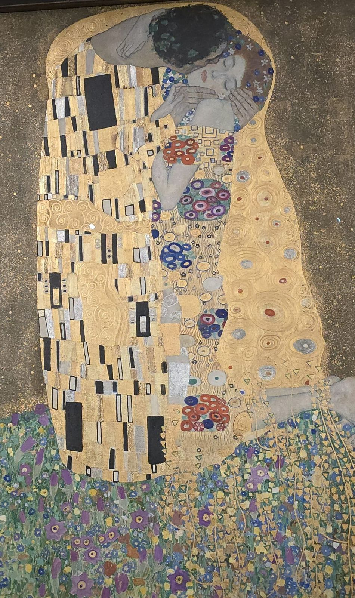
I bought my ticket to the Belvedere because of The Kiss.
I suspect that this is why most people plan to visit the Belvedere, the palace-turned-art-museum that is home to notable artists and masterpieces over 800 years. Klimt’s The Kiss is one of those paintings that crosses between art and cultural shorthand. People who couldn’t recognize another Klimt painting can recognize this one, and it is reproduced and remixed on everything from postcards to pillow to anime to socks. It’s the kind of image that is so thoroughly in the visual vocabulary of modern life that seeing the original feels familiar and necessary.
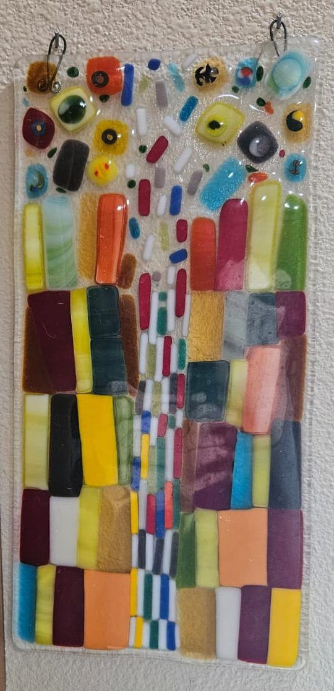
I have seen the reproduction in a hundred different ways, and I have even created my own artwork inspired by the patterns and colors of the fabric, the way the decorative elements almost overwhelm the figures, and how the final work itself falls somewhere between “painting” and “mosaic”.
Unlike some iconic pieces, The Kiss feels approachable. There are pieces of it that I could take inspiration from and make my own, though with paint and glass, not platnium, gold and silver.
And so, I bought the ticket because when something lives in your imagination long enough, the chance to see it in person no longer feels optional.
In other words, I was not indifferent to this painting, and I carried this history with me when I entered the museum.
Visual Storytelling
One of the things I love about visiting museums is the way in which the curator tells a story. From the color of the walls, selection of art and to flow and order in which to you see it, all of this is a subtle narrative woven into the experience. While it may go unnoticed by most people, galleries are rarely arranged by accident. And with The Belvedere, the curatorial argument being made visually was a particularly interesting perspective.
The first gallery of the permanent collection leading to The Kiss opens with Egon Schiele’s The Embrace. I had not encountered this particular art piece before and fell in love immediately. Two figures wound around each together with rawness and urgency, the painting evoking a feeling more than realism. It is this focus on feeling and subjective perception that always makes me fall in love with expressionist artwork.
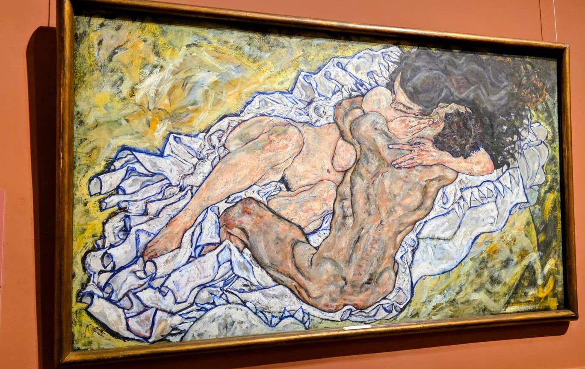
From this gallery, which featured other interesting and engaging impressionistic artwork, the next room moved onto Klimt and landscapes. While some of his landscapes seem to capture movement and feeling in the same way that may echo Van Gough to a viewer, the ones I am most drawn to are his zoomed-in landscapes. Rather than wide, pastoral scenes, he focuses on the close details, creating an almost abstract riotous mosaic of colors. Unlike most canvas’ you will find displayed here or at any museum, he tends to use a square format, and the zoomed-in paintings (some of which he used a telescope for) do not feature sky or horizon.
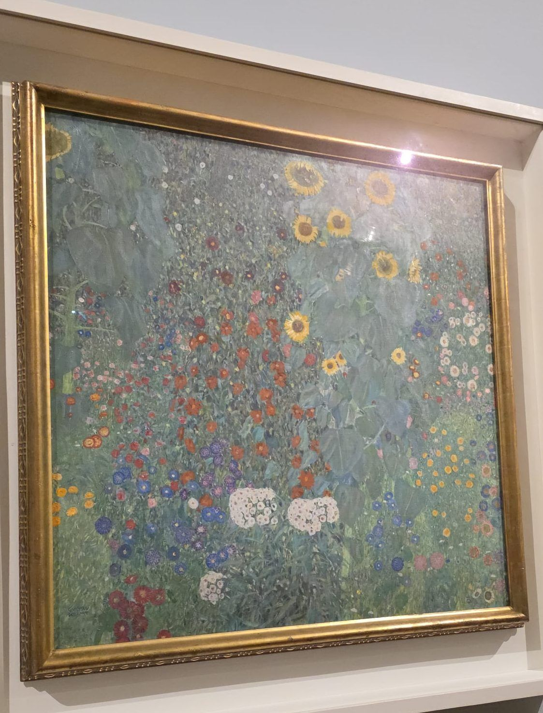
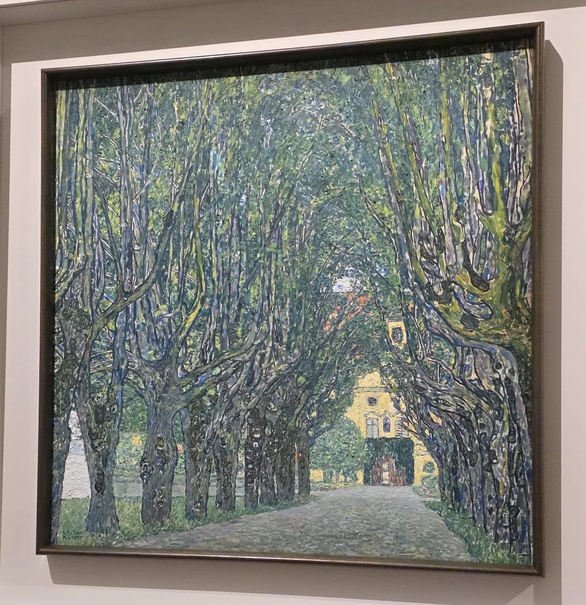
The next gallery had a phrase painted on the wall of the room: From Model to Agent of Change. This is Klimt’s artistic evolution captured in a single sentence. He was a successful academic painter but evolved into a radical modern artist who challenged convention. In particular, the way he presented women, female sexuality, and gender roles made him a radical and cultural catalyst, and he completely reimagined women in art, moving them from passive figures to complex and powerful subjects. Appropriately, this room was dedicated to the female form.
Here, the women painted by Klimt and those inspired by him are powerful, confident and unapologetically present in the moment. His unfinished work, The Bride, caught my attention. It’s generally accepted as unfinished, but looking at it, I couldn’t help but disagree. The painting feels somehow complete despite its missing pieces, as if the painting itself was not the subjects but instead actually capturing the moment of becoming what it was meant to be.
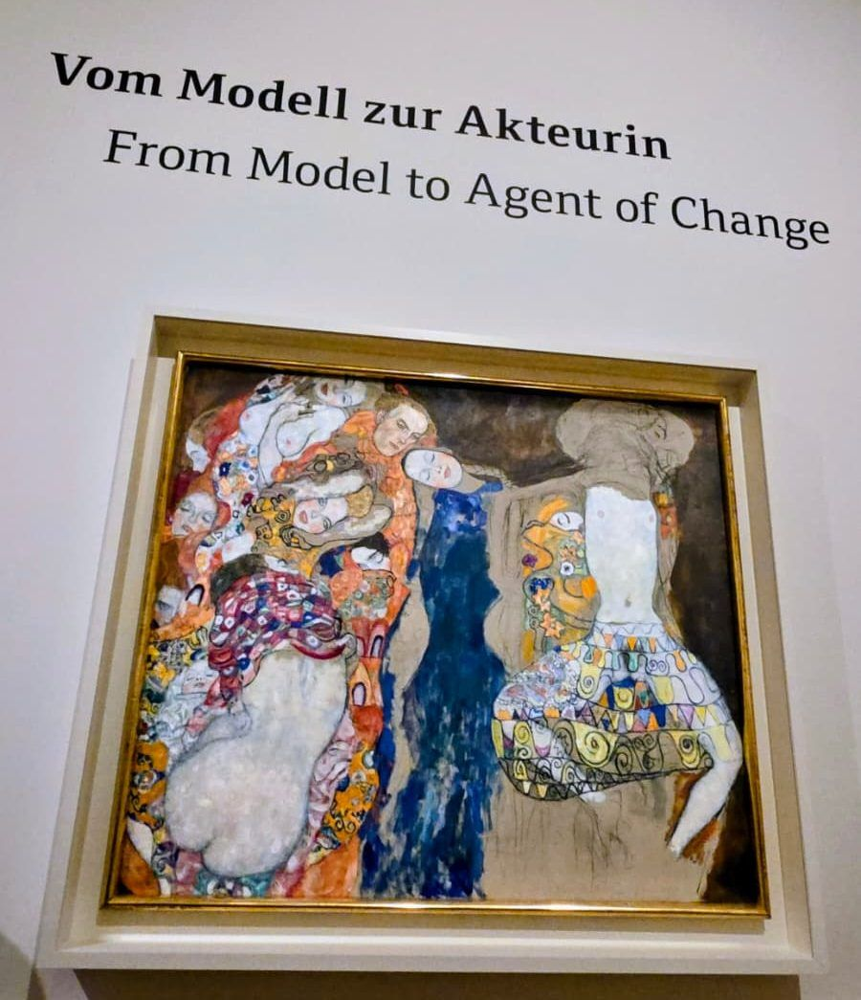
The Kiss
With this final visual statement, the gallery finally led to The Kiss.
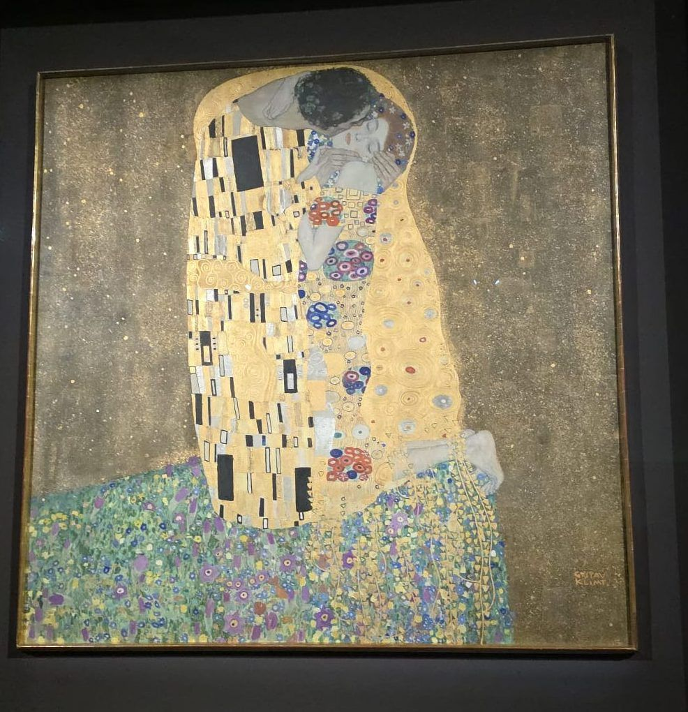
I knew the dimensions already intellectually (6ft x 6ft), but standing in front of it for the first time, the life-size scale still surprised me. It filled the wall, overwhelming in a way that smaller reproductions just do not prepare you for. It is also, like many of his other works, square. Again, something I knew intellectually going into the museum, but was still surprised by in person and how the canvas size and shape effect the work itself. The precious metals used reflected light and sparkled in a dozen different ways, from low gleams to shiny brightness.
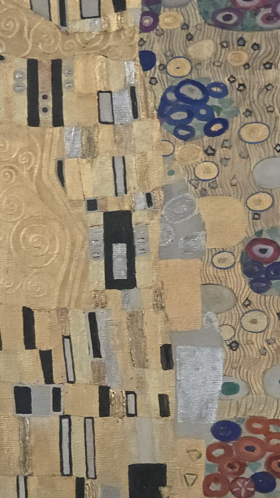
Seeing the work in person, I spend some time just looking at it. Around me, dozens of languages from the crowd of people, but I couldn’t help but just take in the piece first in its entirety, then in the details I had never given much additional thought to. I could see now the difference in size between the figures, and tried to understand the proportions. I noticed for the first time that the couple appeared to be on a cliff, or a precipice of some kind. Her toes almost seem to be gripping at the grass and flowers, but was it because she was saved or because she was cornered with nowhere else to go?
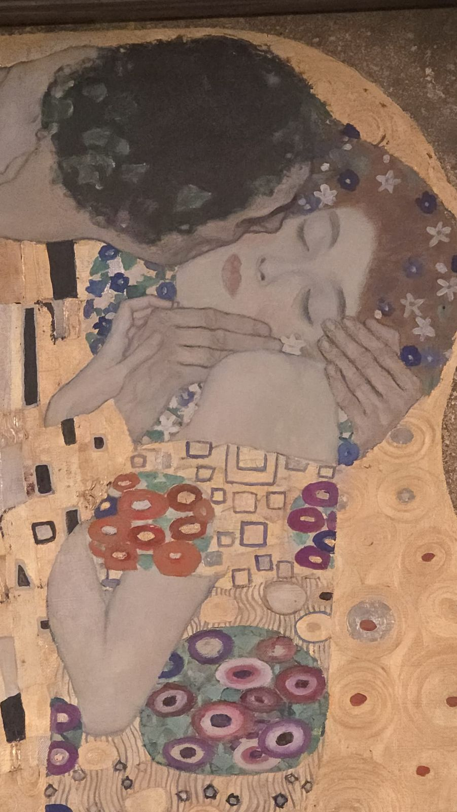
His neck is bent awkwardly, his face turned toward her, but we cannot see it fully. Her own face is turned away, eyes closed. His hands grip her head and face, her own hand reaching towards his.
I had always read this as surrender to tenderness. A loving embrace.
Standing there, having just walked through a gallery of women who looked directly back, who led with their own gaze and their own power, I was left with a set of very different questions. Was this romantic? Was it consensual? Was she giving in or being saved or something else entirely?
I wanted to stay with those questions, and more. To look longer. To move closer, then step back, then move closer again. But there were people. So. Many. People.
Tour groups that needed to pass. Phones raised for selfies and posed shots. The constant shuffle of a crowd that needed to keep moving. I wasn’t angry – how many times have I seen this at other museums, other famous works? But I was frustrated in the specific way of a person who wanted more than a situation can give. I kept readjusting my position, trying to find an angle, trying to get close enough to see if the texture I imagined was really there, all while being considerate to the ebb and flow of those around me.
But I couldn’t tell. The glass protecting the painting flattened everything I wanted to see. It was frustrating in a different, but similarly fruitless, way.
I would have liked to sit with this painting. To actually think about what I am looking at, consider its impact across art and culture. But it’s obviously not something that could ever happen, and I had to come to a level of acceptance with that. So I moved on to the next gallery room.
After the crowd at The Kiss, the silence in this room felt almost loud. There were fewer than a handful of people here, considering the art, which was beautiful. Even a Monet failed to attract its own small crowd.
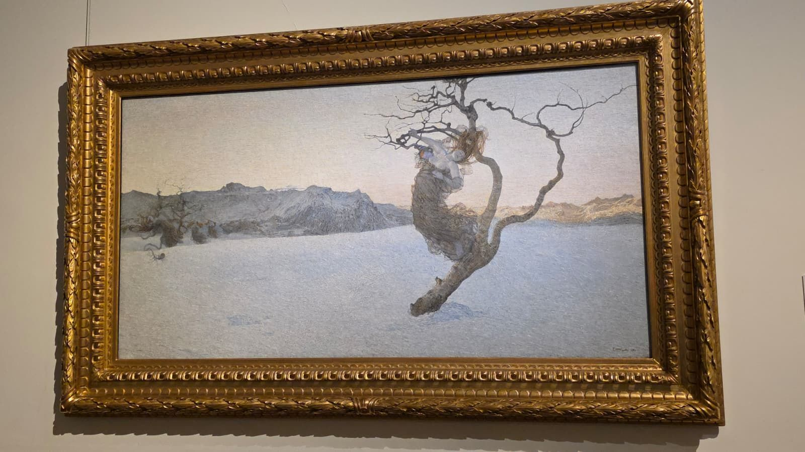
An example of symbolist work
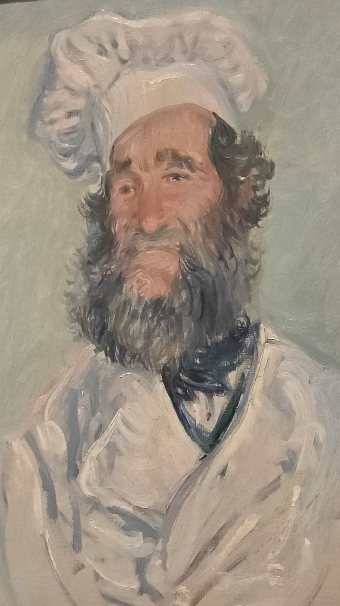
I want to be clear about what I mean when I say no one was there. Not a small crowd, not a quiet cluster of people. No one. Not even a person in front of what is one of my favorite Klimt paintings, Judith.
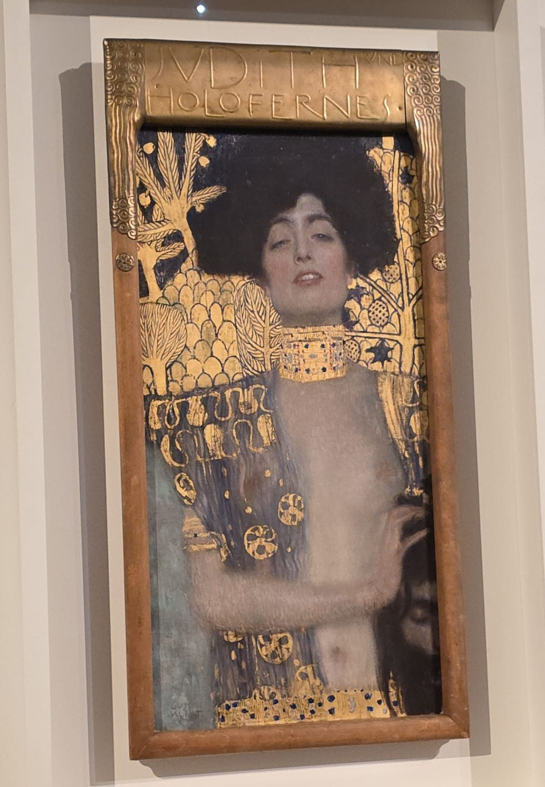
Judith is a striking painting. A woman, captured in the moment after committing an act of extraordinary violence, gold dripping from her body and the frame, her expression both wild and seductive, caught in a moment of proud satisfaction. The severed head of Holofernes is reduced to a partial, almost incidental, detail in the lower corner. Neither him nor the act is the subject of the painting, which clearly belongs completely to Judith.
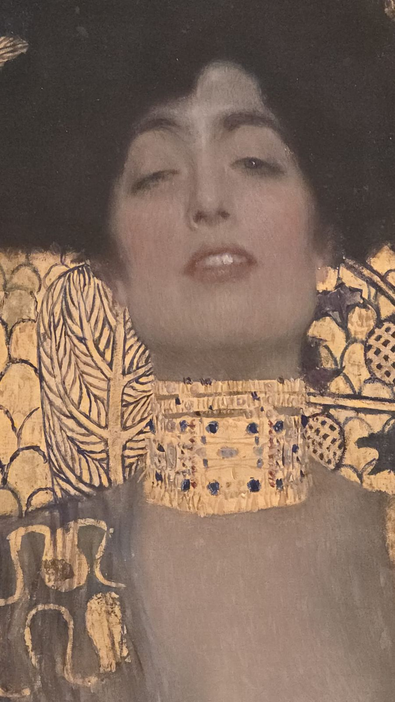
She looks out of the frame directly at the viewer in challenge, without subtlety. Having just stood in front of The Kiss with its closed eyes and ambiguous tilt and its questions about who is holding power in that moment, standing in front of Judith felt provocative. The museum had been building towards this challenge, leaving me to ask questions without answers.
I stayed with Judith for a while to think about those questions. There was plenty of room.
A change in Perspective
I continued through the museum, trying to collect my thoughts. Visiting Messerschmidt’s busts gave me a fresh perspective to not only continue with my tour of the museum, but to return to the beginning and re-experience it not just as an observer of art, but as an observer of people.
People, as it turns out, are fascinating.
The first room I came to with this new lens of observation featured the larger-than-life painting of Napoleon crossing the Alps.
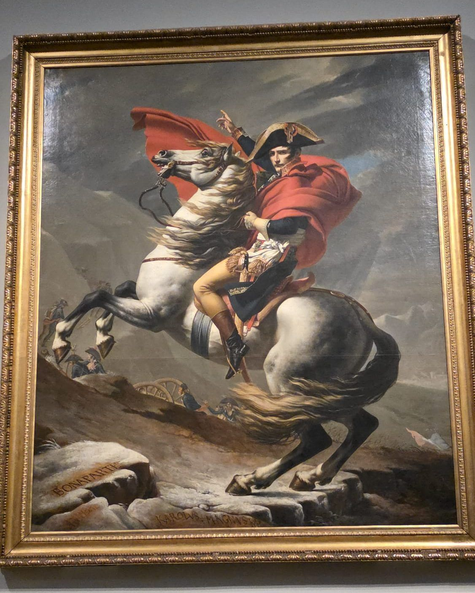
The painting is enormous. Dramatic. It is not only historically loaded but also referenced enough in popular culture that it should, by any reasonable measure, earn significant attention. I stood in the back of the room and watched as people came in. In the ten minutes or so that I watched, fewer than a handful of people stopped to look at it at the painting for more than the few seconds it took for a quick picture. Most walked past without slowing.
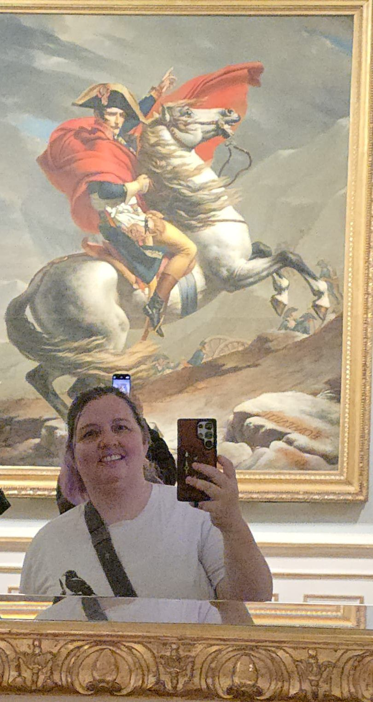
It wasn’t the painting that had failed at being interesting. It was simply not on “the list” of famous artworks to see. I instantly recognized the painting and was delighted – but it’s presence at this particular museum had been a mystery to me. It is easy to imagine how it could be overlooked at the end of a gallery, despite stretching nearly floor to ceiling.
I kept thinking about the curatorial arc I had walked through with Klimt. The careful sequencing, the suggestion being built room by room, the question being asked about power and gaze and what it means to be seen. All of that work, all of that thinking, and most people in that gallery were moving through it on a path that had been set before they ever arrived. Not the path set by the museum, but by the paintings prior fame. This is when I decided I had to see The Kiss again.
The flow through the gallery that leads to The Kiss was noticeably different on the second rotation. I could see it now in a way I hadn’t before: the way the rooms thinned out as you moved through them, the way attention collected and pooled at certain points and rushed past others. The Schiele. The women with the direct gazes. The Bride, still unfinished, still becoming. These rooms had people in them, but they moved through at a pace that felt more like browsing than seeing. Interested, but not committed. The museum equivalent of passing scenery on a train ride.
And then The Kiss, and everything stopped.
Or rather, everything compressed. The room had a different energy than the rest of the gallery. It was denser, louder, and more urgent in a way that had nothing to do with the painting and everything to do with what the painting had become. The dark walls made the painting seem to float ethereally before the crowd, but also emphasized the closeness of the room. People pushed gently toward the front, phones raised, found their angle, took their shot, stepped aside. Couples posed in an imitation of the famous pose. Few people stayed long enough to get a clear photo of the painting, some just accepted that the photo would have a border of strangers and snapped a quick picture. Some people looked at the painting through their screen the entire time they were in the room. A few never lowered their phones at all.
I watched a woman pose in front of it three different ways, check each photo, and leave without, as far as I could tell, actually looking at the painting directly. I don’t say this with contempt: I say it because it told me something about what this room had become, and what The Kiss had become inside it. It was no longer primarily a painting to be seen. It was a location to be documented, a proof. A checkpoint on a list that, once completed, released you to the next thing.
I was irritated. I’ll be honest about that. Not at the people – I bought my ticket because of The Kiss too, and I am not in the business of deciding how other people should experience art. But I was sad, in a specific way, about what was being lost. Not just for me, but for the painting.
The Kiss deserved better than ninety seconds and a selfie. So did everything around it. And I kept asking myself, standing there watching the room move: what would it take to slow this down? What would make someone stop, actually stop, and look?
Reflection
I have been thinking about what it means to actually see something.
Not to be in its presence, or to document that you were there. Not “seeing it” by recognizing it from the reproduction you already knew. But to actually see it, to let it take time, to let questions form and sit and develop, to notice what changes when you move closer or step back or come at it from a different angle.
Maybe this kind of seeing requires something the room around The Kiss could not provide: stillness. Not silence or solitude, but a quality of attention that the current conditions make almost structurally impossible. The crowd creates urgency. The urgency creates speed. The speed flattens everything: the painting, the questions, the curatorial argument that had been building for several rooms before.
And I don’t think the people moving through that room and gone in 60 seconds are failing at something. I think the environment is failing them. The system has been designed (not maliciously, not even consciously) to reward speed and documentation over encounter. To make “the checkpoint” the “whole point”.
What I kept coming back to, sitting with all of this later, was a simpler question: what would have to change for this room to feel different? Not just for people like me, who came with history and questions and a piece of glass hanging in their kitchen. For anyone.
Originally published at fieldnotesfromabroad.com/2026/04/16/vienna-the-kiss-and-the-checkpoint/